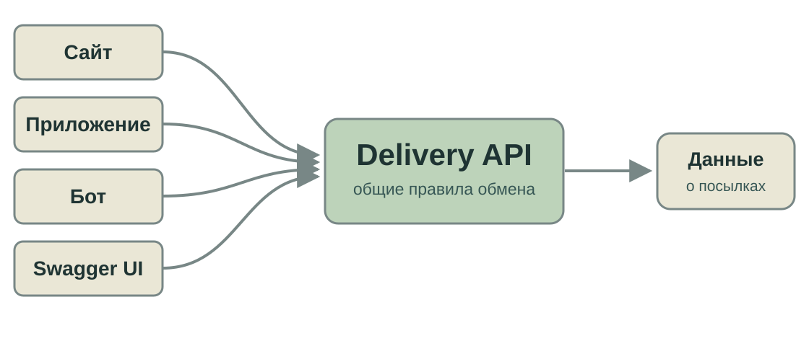

Как программы договариваются друг с другом?
REST API, OpenAPI и Swagger UI на примере службы доставки.
Один сервис. Разные клиенты. Общие правила обмена.
REST API, OpenAPI и Swagger UI на примере службы доставки.
Один сервис. Разные клиенты. Общие правила обмена.

Сайт, приложение, бот и Swagger UI обращаются к одной службе доставки.
Клиент → HTTP-запрос → Delivery API → HTTP-ответ
GET /shipments/125 → данные о посылке № 125 в JSON
Swagger UI в этой цепочке — ещё один клиент.
Метод, адрес, параметры, заголовки и тело.
Статус, структура данных и типы полей.
Авторизация, ограничения и возможные ошибки.
GET /shipments/125 HTTP/1.1
Host: delivery.example.edu
Authorization: Bearer <token>
Accept: application/jsonГде здесь метод, адрес ресурса и подтверждение доступа?
| Метод | Пример | Смысл |
|---|---|---|
GET | /shipments | Получить список. |
GET | /shipments/125 | Получить одну посылку. |
POST | /shipments | Создать посылку. |
PATCH | /shipments/125 | Изменить часть данных. |
POST | /shipments/125/cancel | Выполнить действие «отменить». |
{ "id": 125, "weight_grams": 2500 }
{ "id": "125", "weight_grams": "2500" }Для человека ответы похожи. Программа может ожидать именно числа.
| Статус | Что это означает в примере |
|---|---|
200 | Посылка найдена; данные в ответе. |
201 | Новая посылка создана. |
401 | Запрос не аутентифицирован. |
403 | Доступ к операции запрещён. |
404 | Такой посылки не нашли. |
500 | Сбой на стороне сервера. |
Сервер ответил — ещё не значит, что операция удалась.
Клиент проходит предусмотренный сервисом вход.
Authorization: Bearer <token> в заголовке запроса.
Сервер определяет пользователя и разрешённые действия.
Работающий интерфейс сервера.
Правила запросов, ответов и ошибок.
Машиночитаемое описание HTTP API.
Веб-клиент, который читает описание и выполняет запросы.
openapi: 3.1.0
paths:
/shipments:
get:
summary: Список посылок
responses:
'200':
description: Список полученОдин и тот же документ можно открыть как /openapi.json и через Swagger UI.
Читает OpenAPI → строит форму → отправляет HTTP-запрос → показывает ответ
Authorize · Try it out · Execute · статус и JSON
Видимая документация помогает, но правильность API проверяет реальный ответ.
GET /shipments.id из JSON.POST /shipments/{id}/cancel.Нужный id сначала неизвестен: его надо найти в ответе.Один HTTP API может обслуживать разные интерфейсы.
Контракт задаёт методы, данные, доступ и возможные исходы.
OpenAPI делает правила читаемыми для инструментов; Swagger UI позволяет проверить их запросом.
Следующий шаг — использовать тот же контракт для создания клиента и проверки его работы.